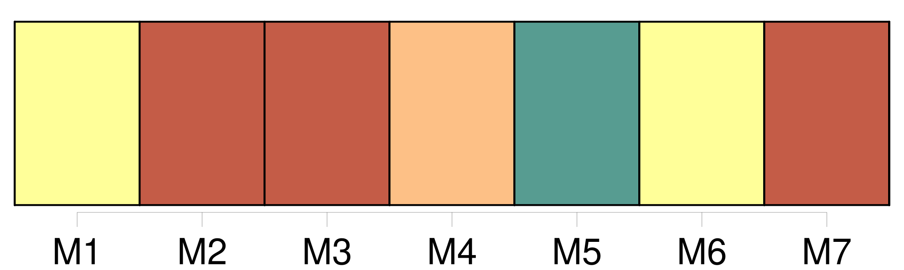

Longueur nb maillons : 13 mentions |
  |
[La girafe] n'adopte [son] petit que s'il est capable de se tenir rapidement debout ( généralement au bout de 15 minutes ) et de stimuler la lactation. Au bout d'une heure, il doit tenir sur ses pattes pour atteindre les mamelles de [sa mère] où il pourra se nourrir d'un lait très gras.
Dans le cas contraire, [elle] l'abandonne ou même le [tue] [La mère] se fait comprendre de [son] petit en le caressant avec le bout de [son] museau ou avec un langage sonore d'une fréquence trop élevée pour les humains.
[Elle] l'incite ainsi à [la] suivre et à [la] téter, créant ainsi le lien maternel. [2 phrases] Le sevrage intervient au bout de 12 à 16 mois mais le girafon peut rester avec [sa mère] jusqu'à l'âge de deux ans et demi. Après cette période, il est gardé dans une « nurserie » qui permet à [sa mère] d'aller s'alimenter. |
La ressource peut être téléchargée sur la page Ortolang
Si vous avez des questions ou vous voyez des erreurs, merci d'envoyer un mail à silvia.federzoni89@gmail.com
Site développé par S. Federzoni (contact)